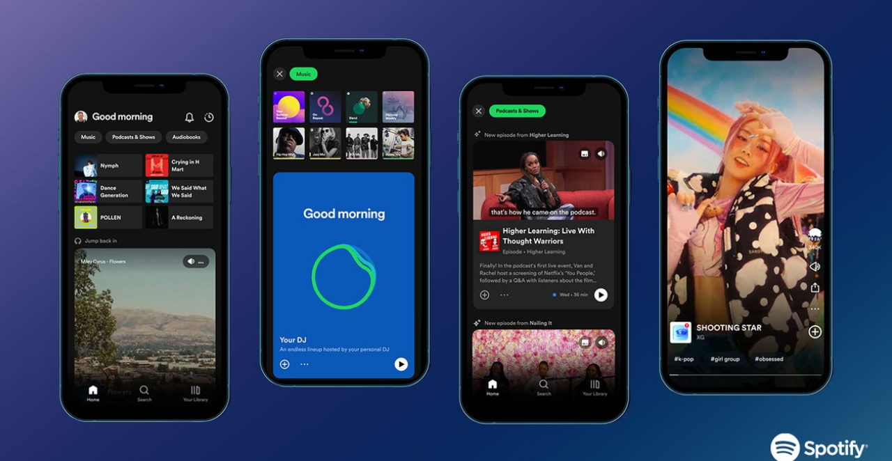

In early 2023, Spotify released AI DJ, an AI service that blends generative AI with the platform's long-standing recommender system. Unlike passive playlists such as Discover Weekly, DJ introduces a new interaction model: a named, voiced persona ("DJ X") that curates and presents music in real time. This is one of the first consumer-facing features to explicitly merge GenAI with algorithmic recommendations, giving users not just personalized content, but a literal voice representing the algorithm behind it.
As part of a graduate-level qualitative UX research course at Iowa State University, I chose to study how Spotify users perceive this new experience. While there is extensive research on generative AI and recommender systems individually, little is known about how people respond when these technologies are combined and personified. With companies rapidly adopting GenAI across countless use cases, DJ raises an important question: How do users make sense of an algorithm when it suddenly talks back?
After launching DJ, users receive a sequence of short “mixes” — sets of five to six songs grouped around themes such as recent listening habits, past listening eras (e.g., “your 2018 favorites”), artists they already enjoy, or general moods or "vibes". Each mix is introduced and closed by DJ X, who provides brief commentary ranging from simple theme descriptions to deeper context about the artists or tracks in the mix.
Users have limited control in a DJ session — they can skip individual songs or press the Remix button to generate a new mix, but they cannot influence the themes or content selections. These are determined entirely by Spotify's underlying recommender system, which aims to keep users engaged by predicting what they might want to hear next — a pattern common across platforms like TikTok, where algorithmic curation drives continuous engagement.
What stood out to me was how different DJ feels from Spotify's other personalized features. Discover Weekly and similar playlists rely on similar recommendation logic, but DJ is the first to give that logic a persona, a voice, and a conversational presence. I became curious how everyday users — many with limited knowledge on how these sorts of algorithms fundamentally work — interpreted this shift. Did DJ make the algorithm feel more visible? Did it change how people thought about personalization, control, or Spotify itself?
This study aimed to understand how Spotify users make sense of AI DJ — a feature that blends generative AI with algorithmic music recommendations and introduces a voiced persona into the listening experience. I was particularly interested in how users interpret and trust AI-driven features in everyday contexts.
I focused on three guiding research questions:
Success for this project meant identifying early patterns in how people understand, use, and emotionally respond to DJ — not to produce definitive conclusions, but to surface themes that could inform future research or design directions.
To meet the requirements of the course this project was completed for, this study used semi-structured qualitative interviews as the primary data collection method. My approach centered on designing a process that aligned with those requirements while still answering my research questions meaningfully.
Despite being a requirement, semi-structured qualitative interviews were also the correct method for this study because my research questions focused on people's perceptions, decision-making, and lived experiences with AI DJ. These questions required depth, nuance, and the flexibility to probe into unexpected directions — all strengths of SSQIs. This format allowed participants to describe how and why they use DJ in their own words, while still giving me enough structure to compare patterns across interviews. Because the feature is personal, contextual, and emotionally driven, a qualitative approach was the most effective way to surface the attitudes and behaviors that wouldn't emerge through surveys or behavioral data alone.
I recruited seven participants using convenience sampling from my personal, academic, and professional networks. Because this was an unfunded student project, convenience sampling was the most practical way to reach qualified Spotify users without the ability to offer monetary incentives. I initially targeted a sample of five to eight participants, anticipating that this range would bring me to a "point of diminishing returns" where additional interviews contribute fewer new insights.
Participants needed to meet three criteria to ensure they had sufficient experience with both Spotify and DJ:
I conducted the interviews either virtually or in person depending on what was most convenient for each participant. Sessions lasted 30-60 minutes and followed a semi-structured script that allowed some flexibility in exploring unanticipated topics. Before beginning, I obtained verbal consent to record each session for analysis. The data collection process was intentionally straightforward, following established qualitative research practices to capture rich, comparable narratives across participants.
Because thematic analysis was a required component of the course, I used it as the sole method for synthesizing the interview data. In a different context, I could have paired this approach with a short diary study to capture participants' real-world DJ usage over time, but within the scope of this project, thematic analysis was the most appropriate way to identify patterns across interviews.
I transcribed each interview and conducted a bottom-up thematic analysis using Taguette, an open source qualitative coding tool. While speaking with only seven participants limits the generalizability of the findings, the dataset showed promising early saturation:
These patterns suggest code saturation, even if full meaning saturation was not reached.
To reduce interpretive bias as the sole researcher, I incorporated perspective-shifting and relfexivity into my analysis. When grouping codes into themes, I iterated through my codes from different participant viewpoints and intentionally adapted a curious, more playful mindset to match the tone of the application rather than the more critical stance I often bring to AI-mediated systems.
Through this process, several key themes emerged.
Across interviews, participants described a tension: DJ reliably surfaced music they enjoyed, yet many felt the feature didn't fully “get” them as individuals. Some felt mischaracterized by the themes or eras DJ assigned to them; others became more aware of how their listening behavior might be interpreted by the algorithm.
For several participants, DJ prompted their first real reflection on how Spotify constructs a profile of their habits — suggesting that the “black box” of algorithmic personalization becomes more salient when it's given a voice and persona.
Participants consistently described DJ as a low-effort listening mode. When driving, cleaning, or doing other routine tasks, they appreciated not having to choose what to play. DJ offered a way to avoid decision fatigue in a platform with overwhelming choice.
As [P2] put it, many simply wanted DJ to “play music at them” without requiring active engagement.
This was the most unexpected pattern. Several participants said DJ made them more conscious of how their actions might influence future recommendations. Some avoided clicking on unfamiliar artists or genres for fear of "sending the wrong signal" to the algorithm.
A few even explored new music on other platforms, like YouTube, to avoid affecting their Spotify profile. This raises a broader design question: How can recommender systems balance personalization with users' desire for untracked exploration?
Participants were split on whether the generative AI voice added value. Some appreciated DJ X as a friendly presence, especially during long drives. Others found the interruptions distracting and preferred uninterrupted music. The persona was meaningful for some; intrusive for others.
Nearly all participants expressed a desire for more agency — both over the voice and the music itself. Requests included:
These desires point to a gap between DJ's simplicity and users' expectations for personalization tools that feel responsive and adjustable.
This preliminary study surfaced several opportunities for Spotify to strengthen the DJ experience and better support how users want to engage with AI-driven music recommendations.
DJ made Spotify's underlying recommendation logic more visible to users, sometimes for the first time. Several participants were unsure how their actions influenced future mixes. Providing plain language explanations of when data is collected and how listening profiles are constructed could help users feel more informed and less mischaracterized by the algorithm.
Participants expressed a clear desire for lightweight ways to shape DJ's behavior — from customizing DJ X's voice to influencing the vibe or starting point of a mix. These controls should remain optional so DJ can still function as a low-effort listening mode, but introducing adjustable settings could address many of the frustrations users described.
Some participants avoided exploring new music on Spotify because they worried it would "mess up" their DJ. This recommendation also provides business value: a dedicated space for exploration — or clearer guidance on how to browse without affecting recommendations — could reduce this anxiety and keep users from turning to competing platforms for discovery.
Reactions to DJ X were mixed: some found the voice companionable, while others found it disruptive. This suggests an opportunity to experiment with different levels of presence, tone, or frequency of interjections. Understanding when DJ X enhances the experience — and when it gets in the way — could help Spotify calibrate the persona more effectively.
Although this was an academic project, the study surfaced early signals about how people interpret and navigate AI-mediated listening experiences. Taken together, the findings point to a broader design challenge: users want the ease of a fully-automated mode like DJ, but they also want algorithmic transparency (even in a low-stakes application like DJ), the option for more control over the algorithm, and the freedom to explore without unintended consequences. These tensions highlight opportunities for teams working on AI-driven recommendation features to rethink how transparency, agency, and persona design shape the listening experience. While preliminary, the insights offer a foundation for future research and experimentation into how AI companions can support — not constrain — everyday music discovery.
My reliance on convenience sampling limited the diversity of perspectives in the dataset. Future research would benefit from broader recruitment — ideally across different regions and countries, especially as DJ continues its phased international rollout. Expanding the sample would help validate whether the themes identified here hold across a wider range of listeners.
Looking ahead, future iterations of this research could benefit from a longitudinal approach. While this study captured users' perceptions of DJ at a single point in time, following listeners over a longer period could reveal how their relationship with the feature evolves and whether early impressions hold, shift, or deepen with continued use. Beyond validating or contesting these findings, a longitudinal lens might also illuminate broader patterns in how people engage with personified AI features as they become more integrated into more everyday media experiences.
This project was an important learning experience in conducting qualitative research. At the outset, I found myself looking for patterns that could be modeled or predicted — an instinct shaped by my interest in how people build trust with AI-mediated systems. Over time, I learned to let go of that impulse and focus instead on what generative research is designed to do: surface unexpected questions, perspectives, and possibilities.
The study ultimately expanded my thinking rather than narrowing it. It raised new questions about how motivations for using DJ might relate to exploration habits, or how recommender systems can support curiosity without constraining it. These are questions best answered through continued research and experimentation, and I hope this work contributes to a deeper understanding of how people engage with AI-driven listening experiences.